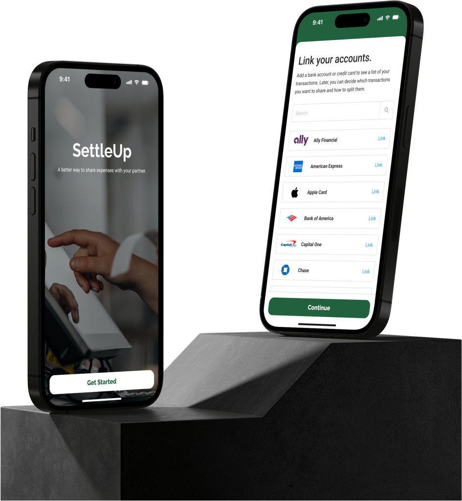
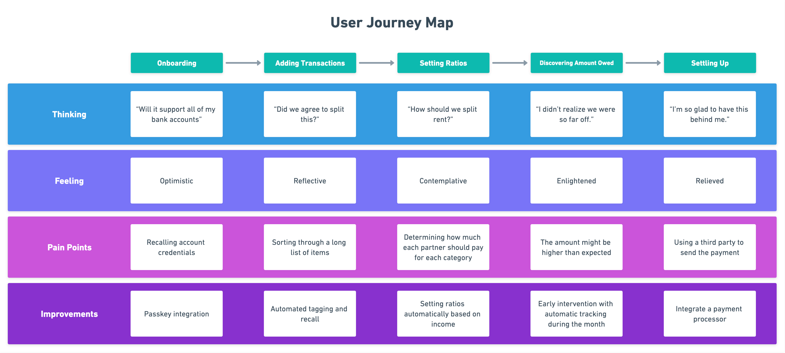
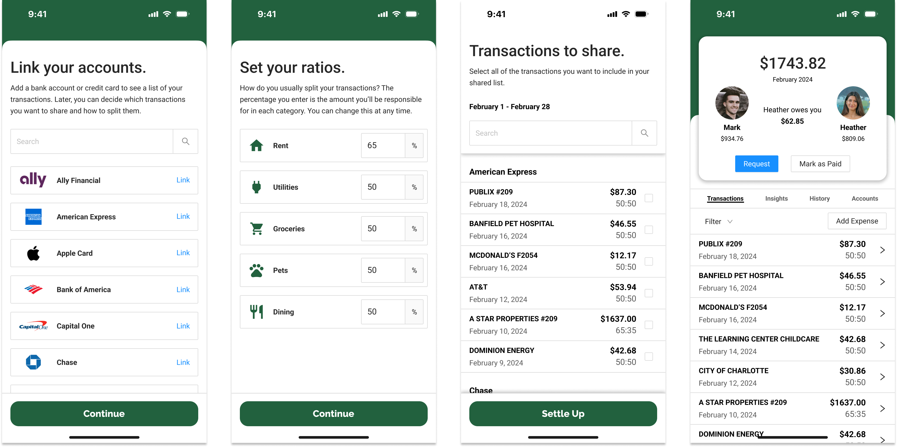

Design Project - Sharing Expenses with your Partner

This is a design project that I lead during my time in customer insight and innovation. Our initial project statement was, “what can we do to support couples before, during, and after their wedding?” After our first round of research, we discovered that most couples already have a pretty good handle on their wedding preparation and execution. We did, however, learn that most couples had interesting and surprising strategies for paying for their event. There was a total lack of consensus on how to share the expense. Upon further research, we found that sharing expenses was often a point of contention in the relationship. Armed with this new information, we pivoted away from weddings and into couples finance. We ran an ideation session and landed on two primary app ideas: a card game to facilitate discussing finances with your partner, and an app that helps couples audit their shared expenses to keep track of payments. In this portfolio entry, I’ll be discussing the second idea.
Problem Statement
Our research helped us identify a few common pain points for couples regarding their shared finances. Firstly, we learned about the concept of “financial infidelity.” This is something that a surprising number of couples struggled with. In our interviews, we asked participants that had gotten divorced what the “tipping point” in their relationship was. A common theme was lying about or failing to disclose money troubles. Whether that be in the form of hidden debt, gambling, or secret purchases, it was always identified as a strong contributing factor to the decision to separate.
Another common pain point that we identified was the convolution and complexity of the expense-sharing strategy. Some couples were going to great lengths to track and share expenses. From boxes full of receipts to multi-page Excel spreadsheets, they were doing it all. A common theme we noticed was the idea that the ways couples were sharing their expenses was cumbersome and possibly inequitable, but it was “good enough.”
Finally, an important discovery from out interviews was that couples who have separate finances use tools like PayPal, Apple Cash, and Venmo to pay one another back for their half of expenses. For example, if a couple went to the grocery store and paid $83.52 for groceries, they would get in the car and then the partner that paid would request $41.76 from the other partner. Naturally, it sometimes happens that they’ll forget to settle up immediately after the expense. When that happens, the delta gets pushed to the end of the month and sometimes goes unnoticed.
Solutioning
We approached the problem from the perspective of the user. If we were going to use a tool to track shared finances, what kinds of features might we want to see? A few key ideas came to mind.
- It needs to require as little effort as possible.
- There should be a way to compile a list of your expenses for reimbursement.
- Certain expenses, like rent, may not be a 50/50 split, so each expense should have a user-defined split ratio.
- All adjustments and preferences should be preserved month-to-month.
With our requirements in mind, we continued to journey mapping
Journey Mapping

Partners Mark and Heather want to share and compare their expenses for the past month. Mark onboards through the app, adding his relevant bank accounts, selecting the kinds of transactions he wants automatically added, and setting his default ratios. He then enters Heather’s phone number, which sends her an invite to connect. Heather will follow the same onboarding process, save for the connection step, since she is already connected to Mark.
Once they are both onboarded, they can choose which of the past month’s transactions they want added to the shared list. Mark and Heather will only add transactions for which they need to be reimbursed. Then, in the shared list, they can determine what split ratio they want to use at a per-transaction level. For example, dining may be tagged as a shared transaction, but suppose Mark took Heather out to dinner for her birthday, so he would set his obligation at 100% for just that transaction, while the rest of the dining expenses are split at 50%.
After all of the shared transactions have been added to the list, the app will display how much money one partner owes the other. The couple is then free to use whatever method they’d like to use to facilitate the reimbursement.
Prototyping
I built a prototype for this product in Figma using Ant Design. I tried to keep the fidelity in the mid-fi range so that we could test our prototype as quickly as possible.

What We Learned
Unfortunately, the team wasn’t able to run a research session on the prototype due to time constraints. Since our leadership decided to move forward with our other concept, I chose to test the prototype with my friends and family. In my testing, I got pretty positive feedback about the idea and the prototype. The most common feedback was that the idea was novel and that it would help smooth a pain point in their relationship. Here are some of the positive quotes I got:
Are you guys actually making this? Because I would totally use it.
Do I need an account with your bank to use this? Or is this a standalone app?
I really like that I can set the ratio for each item.
I also got some great feedback regarding next steps and improvements:
Can I add my own categories?
Is there a way to search the list of shared transactions?
What if I don’t know what our ratio should be for stuff like rent?
Next Steps
In a version 2, I’d like to add some basic quality of life features as well as some automation tools. For example, it would be cool to have a way to recommend a ratio for big items like rent that is based on your incomes. So, for example, if Heather makes $100k and Mark makes $50k, the app could suggest that mark pay 33% of the rent and Heather pay 67%. I’d also like for the app to send a push notification when you make a transaction that would fall under one of the identified categories. Suppose you swipe your card at the grocery store. Since you’ve identified groceries as being an expense you share at a ratio of 50:50, the app could send you a notification that says, “Heather just spent $82.50 at PUBLIX. You’ll owe $41.25 for this purchase.” This would help the couple have active visibility into their shared spending.
Overall, this was a really interesting project and, candidly, I was disappointed that we didn’t get to explore it further. While I agree with my leadership team that the other concept has a broader appeal and is more feasible to build, I really liked this idea and I enjoyed building it out.